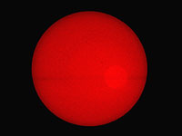
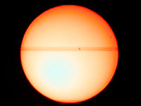
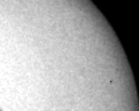
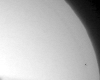
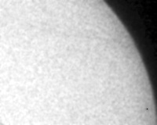
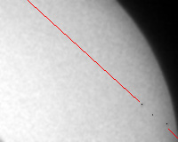

Mercury Transit across the Sun disk.
Most recent Mercury Transit across the Sun disk was on 2003-05-07. I made some photos by a digicam and a simple 30mm telescope (a spyglass). On the pictures below the Mercury is near the right side of the Sun disk. The pictures captions mean Moscow winter time.
12:51 (size
1024x768
)

12:51 For taking photo of the Sun in front of the lens there was a filter of two layers of magnetic film, which is used in diskettes. This filter decreased sun light by K=4000000 times. Shutter 1/60s, aperture 1:4.8. In the big photo (click the picture) it is seen a sunspot near the Sun center. Less dark spots are lost because of high grainy of the image.
Artefacts: (1) a wire crosses the image horizontally, (2) light round flare
12:54 (size
1024x768
)

12:54 Here the filter contained one layer of magnetic film (K=2000). Shutter 1/2000s, aperture 1:11. In addition to central sunspot there are two spots near bottom side of the solar disk.
Artefacts: (1) shadows of two wires, (2) the maximum brightness is beyond the Sun center because of misalignment of the telescope and the camera.
Next pictures show motion of Mercury in time. Image's scale and orientation are adjasted by alignment of sunspots. Gray color reduces color difference of the images. The center of Mercury is marked by a black point.

12:38

12:54

13:11

The red line shows the path of Mercury